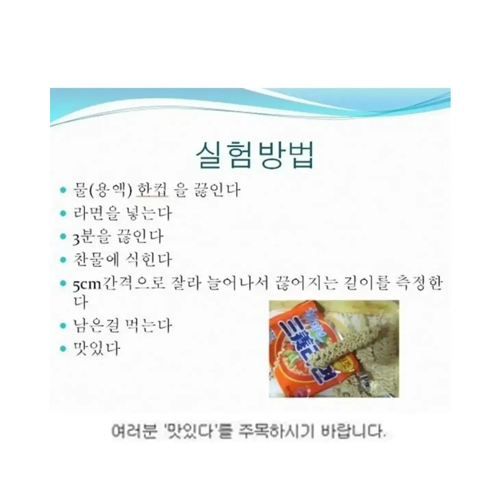
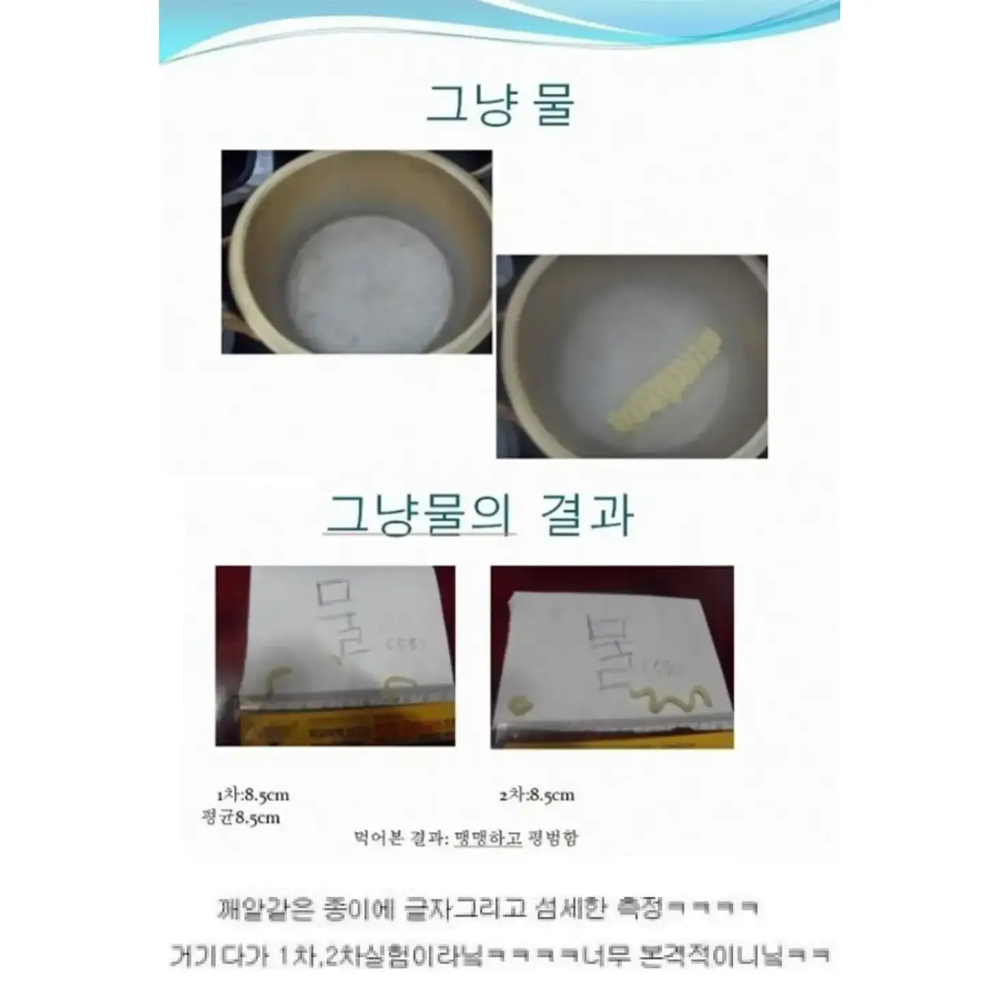
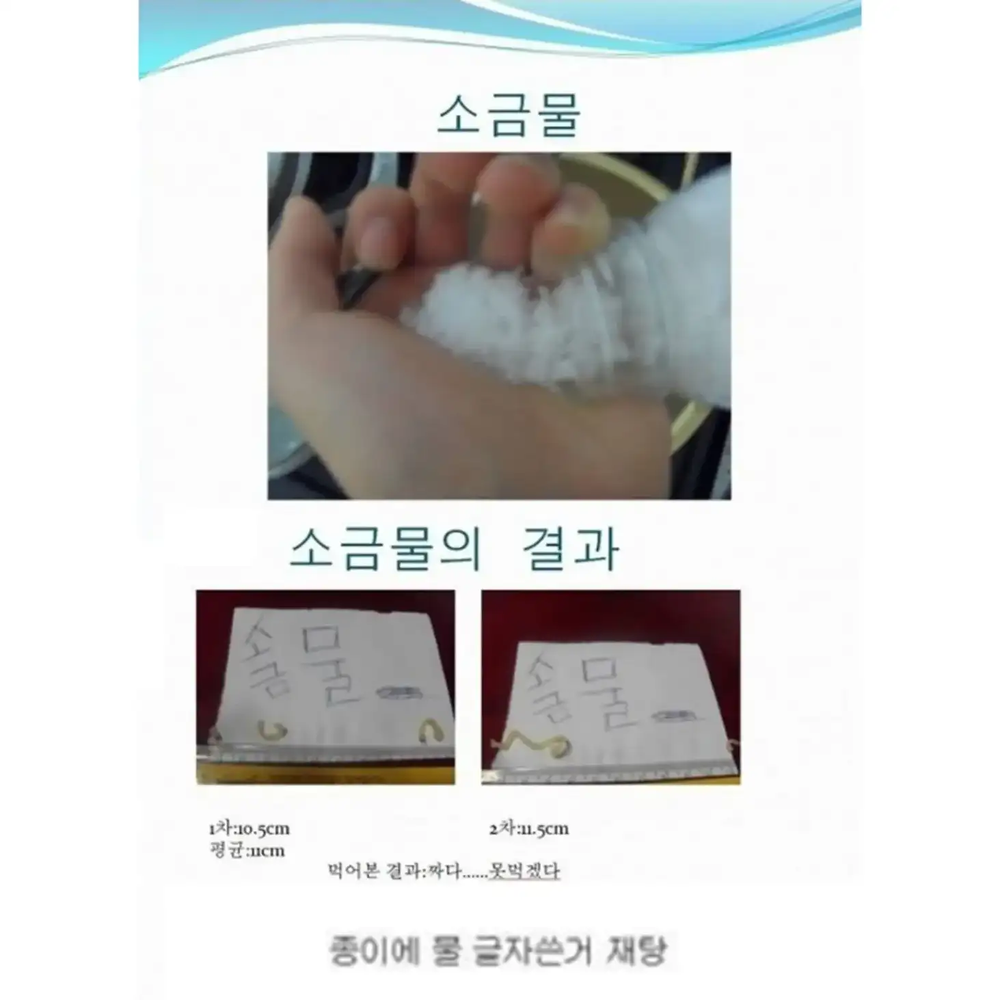
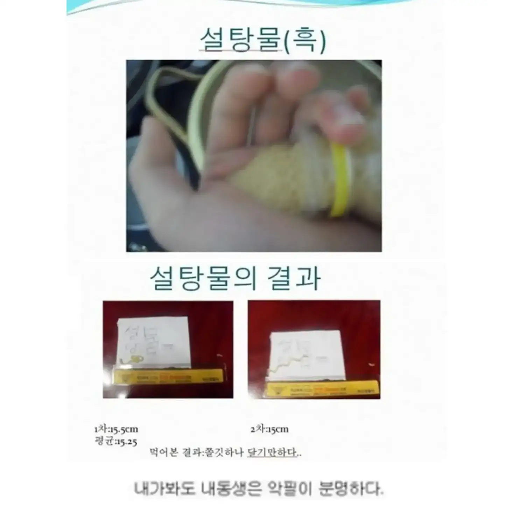
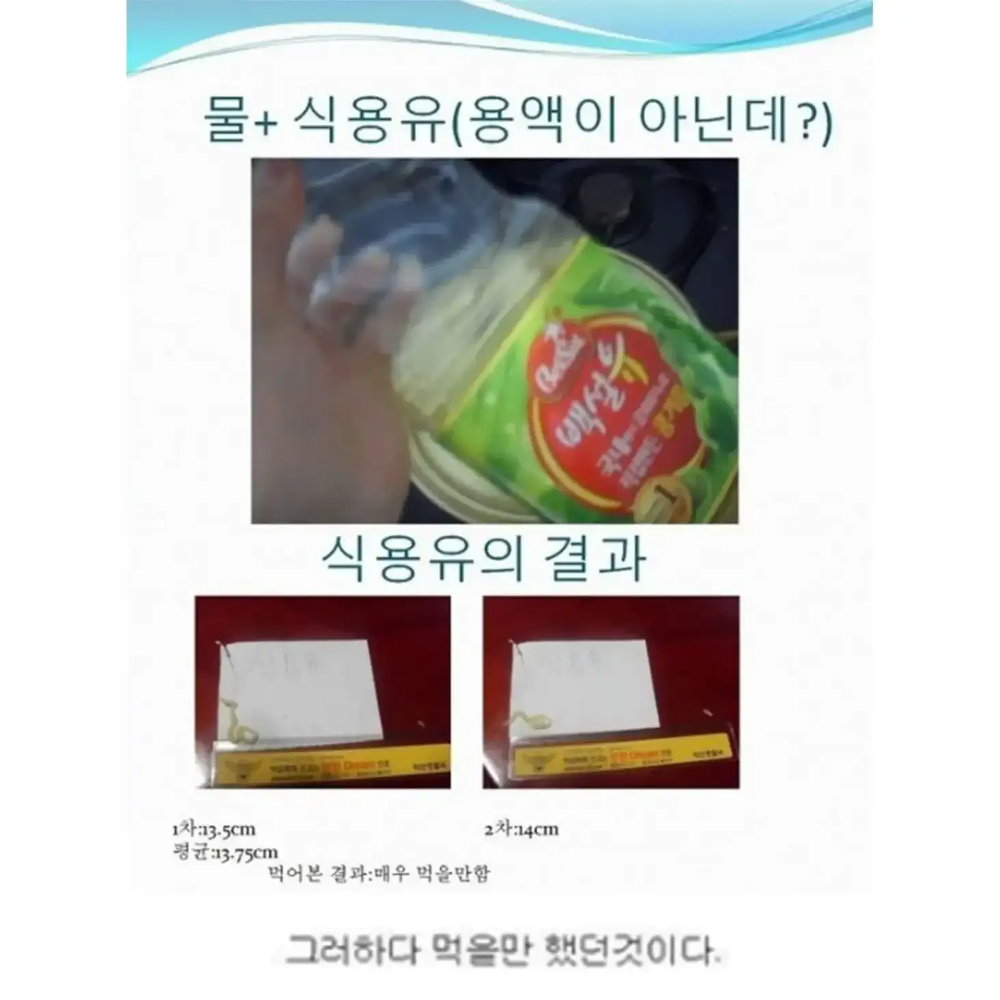
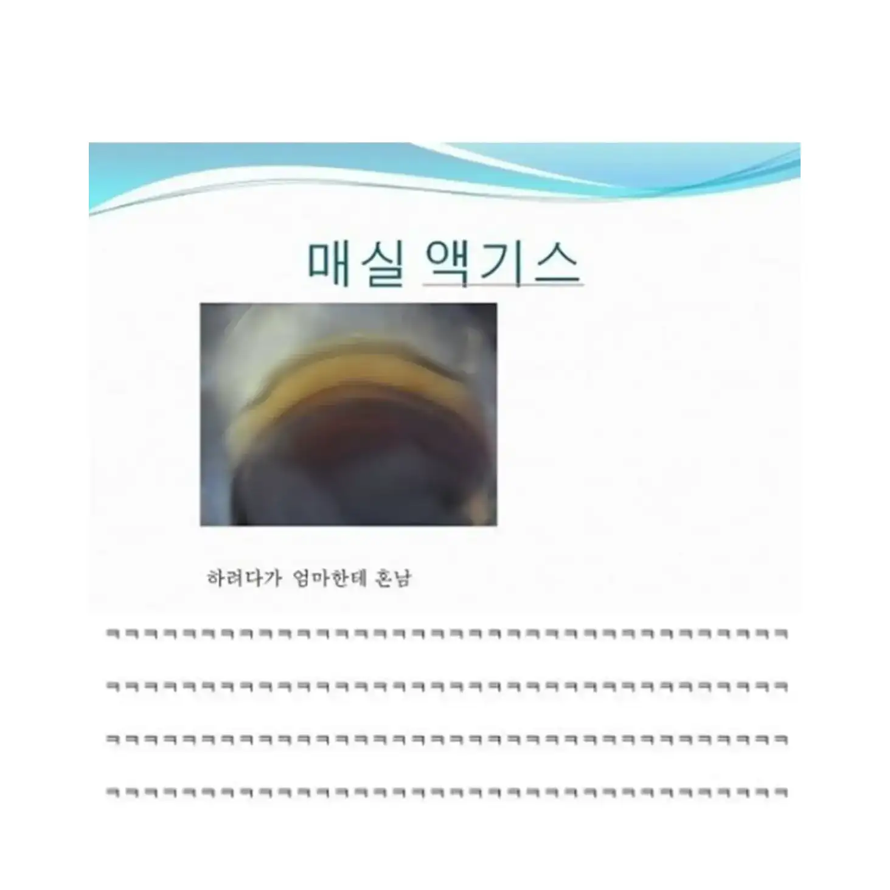
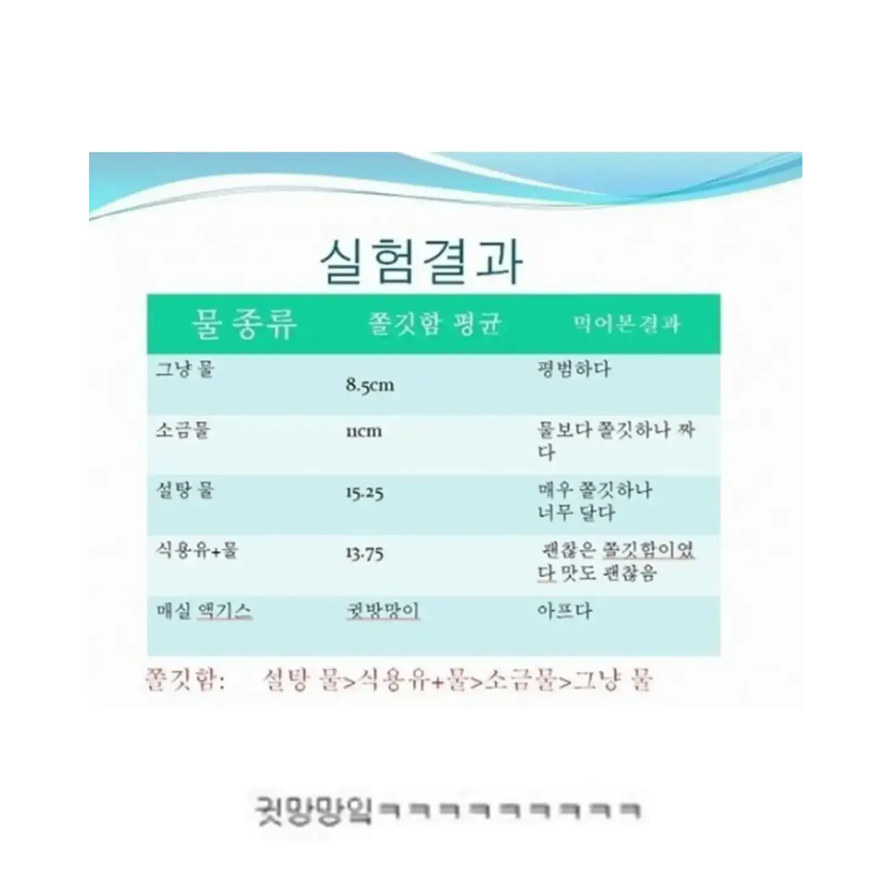
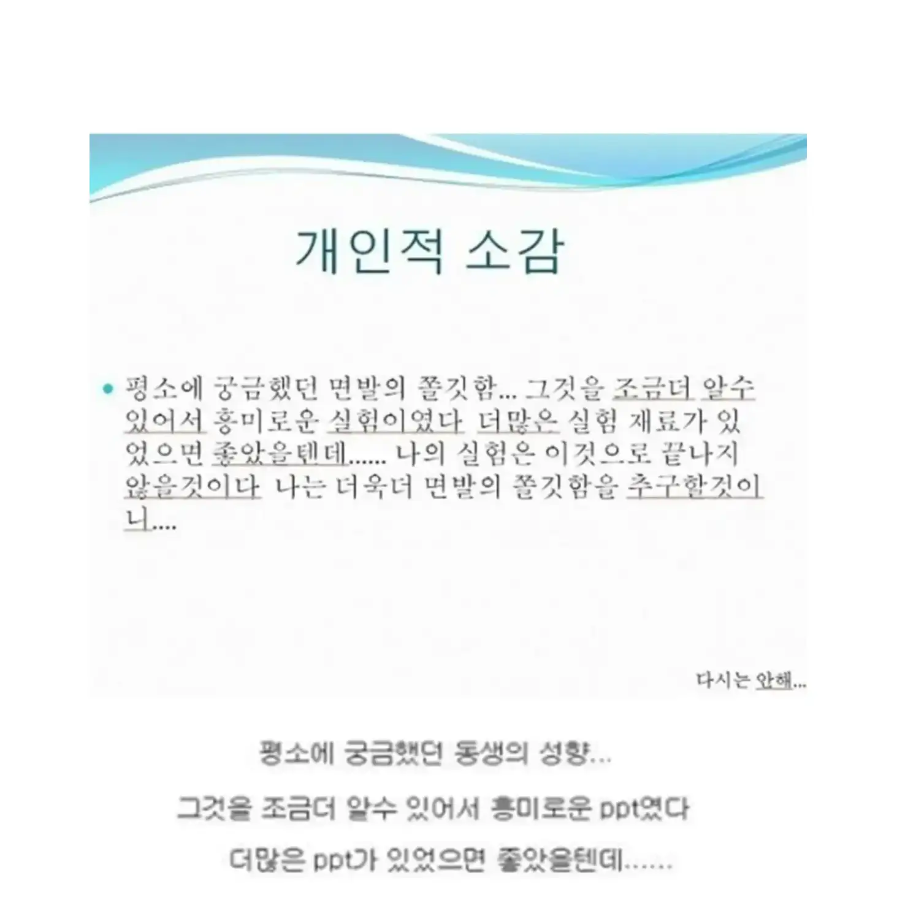

만물박사?
식초넣어봐
하찮아 보이지만 식품기업에서 하는 연구와 크게 다를바 없지 않을까?
그러게? ㅋㅋㅋ
기본틀은 연구자의 훌륭한 자세구만
실험군 대조군 변수통제 의외로 기초는 확실한 듯 ㅋㅋㅋㅋ
아 근데 설탕물은 실험한 애의 느낌이 아니라
ㄹㅇ 일껄?
설탕이 글루텐형성을 억제하니까 면이 더 부드럽고 쫄깃해지긴할꺼임 이론상
매실액도 설탕물이랑 비슷한결과가 나올꺼임ㅋㅋ
매실은 실제로 내가 해봤는데 한입먹고 하수구에 부어버림
글루텐이 있어야 탄력이 더 생기고 탱글쫄깃하지. 그리고 유탕 처리된 면이라서 글루텐이 새로 형성 안됨
부드러움과 쫄깃함은 반대되는 개념 아님?
식용유 살짝 넣는건 진짜 있는 방법 아닌가 ㅋㅋ
좋은 과학자가 되겠군
저나이에 저정도 만든거면 재능러네
생체실험을 본인이하고 참된연구자다
생각보다 실험과 ppt의 틀은 잡혀있는 친구일세
introduction만 채우면 IMRaD 는 충분하네
나는 갈배사이다로 실험해본 데이터 있는데
한입먹고 버려버림
과학실험으로서 손색이 없네.
'쫄깃함'이라는 추상적인 개념을 '면발이 늘어나서 끊어지기 전까지 버티는 정도' 로 개량가능하게 바꾼 점, 여러차례 측정해서 평균값을 사용한 점 등..
훌륭하다. 다만 용액마다 쫄깃함이 다른 원인에 대한 고찰이 없는 점은 아쉬움.
손이 아니라 인장기 쓰면 ㄹㅇ인데? ㅋㅋㅋㅋ
박사해야겠지?